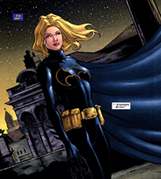

Stephanie Brown
History
Stephanie Brown was born the daughter of the Cluemaster, one of Gotham City third-rate villains. Stephanie's father spent most of her childhood in prison or away from the family. Though he claimed to be "rehabilitated" upon his return to Gotham, Stephanie was furious to discover that he was actually returning to crime without his need to leave clues behind. She decided something needed to be done. Stephanie tailored a costume for herself, and called herself the Spoiler. She knew where her father was hiding out, found out his plans, and left clues so that the police and Batman could stop him. Robin (Tim Drake) tracked her down, and she joined in on the capturing of Cluemaster. She also became attracted to Robin, and it annoyed her that he knew her identity but she did not know his.
Career as Robin, War Games, and Death
In an effort to prove her worth to Batman, Stephanie stole one of his long-range plans for dealing with the entirety of Gotham's criminal underworld. Since this plan was predicated on the involvement of "Matches Malone" (who she did not know was actually one of Batman's alter egos), it quickly spun out of control. The result was a citywide gang war, in which Stephanie was captured by Black Mask, who tortured her to get information about Batman. Although she escaped and made her way to Leslie Thompkins' clinic, she had been severely injured by the villain, and died in a hospital bed as Batman sat beside her.